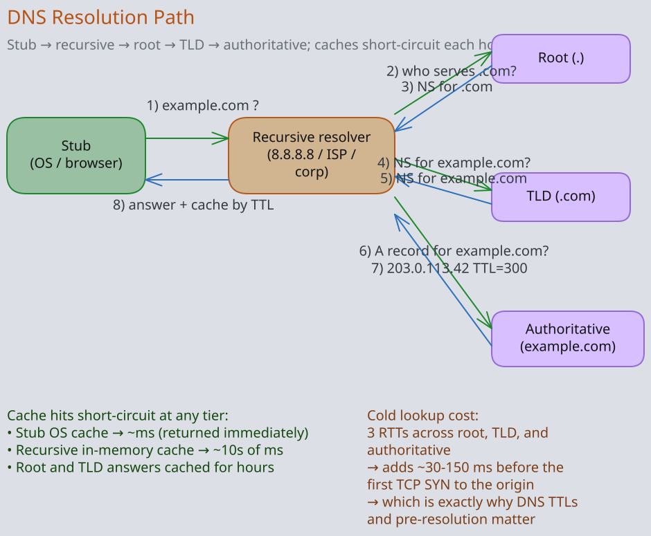
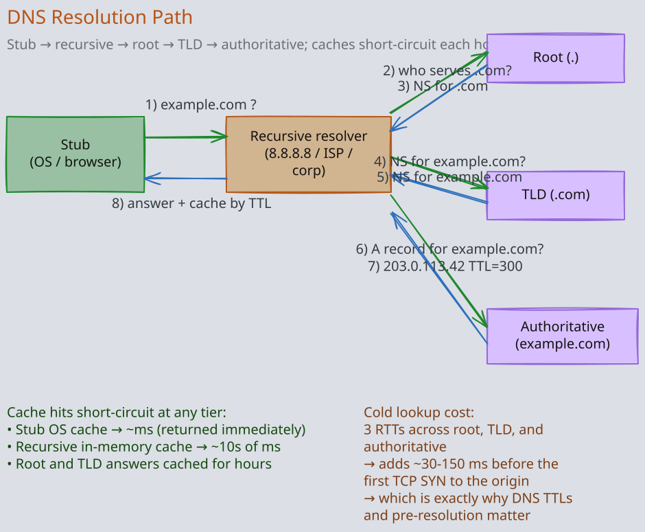
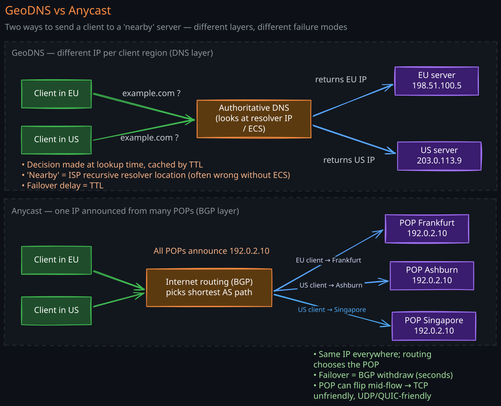
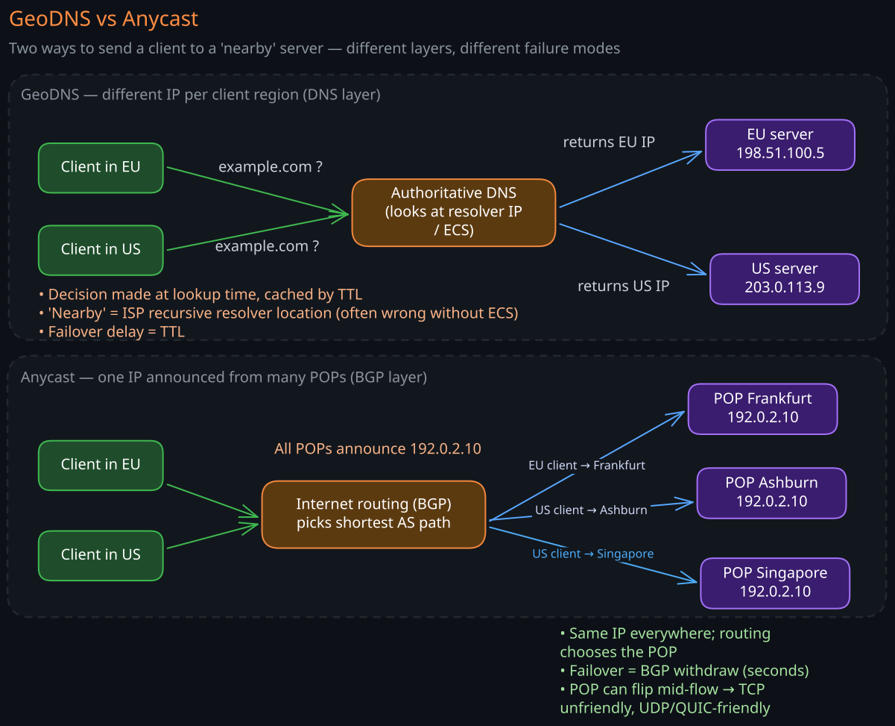

DNS is the first network operation almost every request performs. It is also the operation most likely to silently double your tail latency, route a user to the wrong continent, or take down your entire product when your TTL=86400 record was wrong. Staff engineers must understand DNS not as “the thing that converts names to IPs” but as a global, hierarchical, cached, weakly-consistent control plane.
1. The Resolution Path
A single getaddrinfo("api.example.com") from your laptop walks through more systems than most engineers realize.
- Application calls the OS resolver.
- OS resolver / stub resolver checks
/etc/hosts, then the OS DNS cache. - Recursive resolver (your ISP’s, Cloudflare 1.1.1.1, Google 8.8.8.8): caches answers for the TTL.
- If not cached, the recursive resolver walks the hierarchy:
- Asks a root server (
.) for who servescom. - Asks the
comTLD server for who servesexample.com. - Asks the
example.comauthoritative server forapi.example.com.
- Asks a root server (
- Returns the final A/AAAA record (and CNAME chain) up the stack.
A “cold” lookup can touch 3–5 servers. A warm lookup hits only the recursive resolver. This caching is the single most important property of DNS — and also the source of every operational pain.


2. Record Types Every Engineer Should Know
| Type | Maps to | Notes |
|---|---|---|
| A | IPv4 address | The classic. |
| AAAA | IPv6 address | Increasingly required (mobile carriers go IPv6-first). |
| CNAME | Another name | One level of indirection. Cannot coexist with other records at the same name. |
| ALIAS / ANAME | Another name (flattened) | Vendor-specific (Route53 ALIAS, Cloudflare CNAME flattening). Lets you put a CNAME-like at the apex. |
| NS | Authoritative name server | What delegates a zone. |
| SOA | Start of Authority | Zone-level metadata: serial, refresh, retry, expire. |
| MX | Mail server | Priority + host. |
| TXT | Arbitrary string | SPF, DKIM, domain verification, ACME challenges. |
| CAA | Which CAs may issue certs for this name | Defense against CA mis-issuance. |
| SRV | Service location (host + port) | Common in SIP, XMPP, Kubernetes headless services. |
| HTTPS / SVCB | HTTPS service binding | Newer (RFC 9460): lets servers advertise HTTP/3 support, ECH keys, ALPN. |
3. TTL: The Most Operationally Loaded Field in DNS
The TTL on a record tells caches how long they may serve the answer. It’s a tradeoff:
- Long TTL (hours to days): fewer queries hit your authoritative servers, lower latency on cache hits, lower bill. But you cannot change the record quickly — not even in an emergency. A 24h TTL means up to 24 hours of clients still pointing at the old IP.
- Short TTL (30s – 5m): fast failover, more query load on auth servers, more lookup latency for clients on cache miss.
Operational practices:
- Default
300(5 min) for records you might change. - Lower TTL to
60before a planned change, wait one old-TTL window, then change. - Long TTL only on truly static records (e.g., NS records).
- Remember: TTL is a hint. Some resolvers cap it lower (good — fast convergence) or higher (bad — your 60s record sits in their cache for hours).
The classic outage: TTL is 86400, you discover a bad IP, you change the record, and customers keep hitting the bad IP for the next day. Always pre-stage TTL reductions before risky changes.
4. Negative Caching
DNS also caches negative answers — NXDOMAIN and NODATA. The SOA record’s minimum field controls how long. If you create a record that previously didn’t exist and clients say “still NXDOMAIN,” that’s negative caching biting you.
Set SOA minimum to something sane (300s, not 86400) for any actively edited zone.
5. The Authoritative Server Pattern
Almost every production setup uses a managed DNS provider (Route53, Cloudflare, NS1, Google Cloud DNS, Akamai Edge DNS) for the authoritative server. The reasons:
- Anycast network: the provider announces your NS records from dozens to hundreds of POPs globally. Queries hit the nearest one, so lookup latency is low everywhere.
- DDoS protection: a single-region auth server is trivially attackable. Anycast spreads the volumetric load across the whole network.
- Programmable record sets: traffic management (latency-based, weighted, geo, failover) is a managed feature.
- API-driven updates: you can change records from CI/CD safely.
Operational rule: always run two providers for the same zone, or accept that the provider going down takes you down. The 2016 Dyn attack took down Twitter, Reddit, Spotify, and Netflix because they were all on Dyn. Two-provider setups (one primary, one secondary, periodically synced) survive single-provider outages.
6. GeoDNS — Resolving Based on Who’s Asking
GeoDNS is an authoritative server feature: it returns different answers based on the source of the query. The classic case: send European users to a European IP, US users to a US IP.
6.1 The Catch — Resolver vs Client Location
The authoritative server sees the resolver’s IP, not the user’s. If the user is in Berlin but their resolver is Cloudflare’s 1.1.1.1 anycast presence in Frankfurt, GeoDNS sees Frankfurt and works. If the user is in Mumbai but configured 8.8.8.8 and it resolves out of Singapore, GeoDNS sends them to a Singapore POP — fine. If the user is in São Paulo but their corporate VPN sends DNS to a London resolver, GeoDNS sends them to London — wrong.
This is what EDNS Client Subnet (ECS) fixes. The recursive resolver includes a truncated client IP in the query so the auth server can route based on the real user location. Adoption is uneven — Google supports it widely, Cloudflare deliberately does not (privacy). Build your routing knowing some users will be misrouted.
6.2 How It’s Used
- Direct users to the nearest data center.
- Compliance / data sovereignty (route EU users to EU storage).
- Failover (remove unhealthy regions from the answer set).
- Maintenance routing (drain a region by removing it from GeoDNS for one TTL).
6.3 Failure Modes
- Misrouted users from caching resolvers: a user moves countries; the resolver still returns the cached pre-move answer.
- Geo mappings drift: IP geolocation databases are not perfect. Some IPs are mis-mapped; some are anonymized.
- TTL too long for failover: GeoDNS-based failover only works as fast as the TTL allows. 30s TTLs for failover, 300s for steady state, with health-check-driven removal.
7. Anycast — Same IP Announced From Many Places
Anycast routes traffic to the topologically nearest copy of a destination IP. It uses BGP: the same IP prefix is announced from many POPs; the internet’s routing chooses the shortest AS path. The user has no idea there are multiple servers behind one IP.
7.1 Where Anycast Shines
- Public DNS (1.1.1.1, 8.8.8.8): single IP, dozens of POPs. Failover is automatic — if a POP goes down, BGP withdraws and traffic shifts.
- CDN edge IPs: every CDN POP announces the same anycast IP. Clients hit the nearest one without a DNS resolution step per region.
- Authoritative DNS providers: see above.
7.2 Anycast for TCP — Subtler Than UDP
UDP is single-shot — each query can land on a different POP and it still works (which is why DNS pioneered anycast). TCP is connection-oriented — the SYN and the following ACKs must land on the same server. BGP routing is mostly stable, but during route convergence (a few seconds after a link failure) packets from one connection may flip to a different POP. The new POP has no SYN state and resets the connection. Modern stacks (Cloudflare, Fastly) handle this with sub-second BGP withdrawal and short-lived connections that ride through it without users noticing.
Anycast TCP works fine in practice with good operational hygiene. It is, however, harder than anycast UDP.
7.3 Anycast vs GeoDNS — Why Both Exist
- Anycast is data-plane routing. No DNS step per request, instant failover via BGP, but you cannot control routing precisely (the user’s ISP picks the path).
- GeoDNS is control-plane routing. Precise control over which region a user lands in; slower failover (TTL-bound); resolver-vs-client problems.
Most production global stacks use both: GeoDNS resolves a name to one of several anycast prefixes (one per region), then anycast within each prefix steers to the nearest POP.


8. DNS Security
8.1 Cache Poisoning
The classic Kaminsky attack: forge responses to a resolver before the real one arrives. Mitigations:
- Source-port randomization (every modern resolver).
- DNS Cookies (RFC 7873).
- DNSSEC: cryptographic signatures on records so the resolver can verify authenticity. Adoption is slow (~30% of TLDs); broken DNSSEC causes its own outages (HBO Max in 2022, Slack in 2021).
8.2 DNS Over the Wire — DoT, DoH, DoQ
Classic DNS is plaintext UDP. Anyone on the path sees and can tamper with it.
- DoT (DNS over TLS): TCP on port 853, TLS-wrapped. Used by some OSes (Android private DNS).
- DoH (DNS over HTTPS): HTTPS on 443, indistinguishable from web traffic. Used by Firefox, Chrome.
- DoQ (DNS over QUIC): HTTP/3-era. 0-RTT, no head-of-line blocking.
Privacy improves; censorship resistance improves. Network operators lose visibility into what their users resolve (a feature for users, a complaint for enterprise IT).
8.3 CAA Records
A CAA record on your domain restricts which CAs may issue certs for it. Without CAA, any CA in the world’s trust stores can issue a valid cert for your domain (and some have, by mistake). Always set CAA.
8.4 Subdomain Takeover
A common bug class: a CNAME points at myapp.someprovider.com, but the resource at the provider was deleted. An attacker registers myapp at the provider and now serves traffic for your subdomain — including valid TLS certs (LE doesn’t check ownership beyond the CNAME). Audit your DNS regularly for dangling CNAMEs.
9. Operational Patterns
9.1 The Apex Problem
DNS RFCs forbid a CNAME at the zone apex (example.com), because the apex must hold SOA and NS records and CNAME excludes coexistence. But you want example.com to point at your LB. Two solutions:
- ALIAS / ANAME / CNAME flattening (Route53 ALIAS, Cloudflare flattening): provider-side feature that resolves the alias and returns A records.
- Hard-code an A record: works but breaks if the LB IP changes.
Always prefer the provider’s ALIAS feature.
9.2 Health-Check-Driven Failover
Modern managed DNS lets you attach health checks to records. If the health check fails, the record is removed from the answer set. Combined with low TTL, this gives ~minute-level regional failover.
Pitfalls:
- Health check from the DNS provider’s POPs ≠ what real users see.
- Removing the only healthy region answer causes total outage; always have a fallback policy.
9.3 Split-Horizon DNS
The same name resolves differently inside and outside the corporate network. Used heavily in enterprise. Operationally fragile — bugs are nearly invisible because external observers see one thing and internal users see another.
9.4 DNS-Based Service Discovery
Kubernetes uses DNS for service discovery (my-service.my-namespace.svc.cluster.local). The DNS responses are short-TTL and updated by the controller. Real-world gotcha: clients with their own DNS cache (Java’s default 30s cache, NodeJS’ lookup cache) outlive the controller’s TTL, hold a stale IP, and break during pod rolls.
Fix: configure your runtime to respect the TTL or refresh more aggressively. JVM in particular caches forever by default — set networkaddress.cache.ttl.
10. Common Failure Modes
- TTL too long during an outage: you discovered the bad IP at minute 1; clients still hit it at hour 24.
- Single-provider DNS taken out by DDoS: 2016 Dyn. Two providers, always.
- Subdomain takeover via abandoned CNAMEs: scan your DNS regularly.
- DNSSEC misconfiguration: an expired signature looks the same as compromise; resolvers refuse to answer.
- Resolver cache bypassed by client cache: JVM, NodeJS, browsers each have their own cache. Your authoritative TTL is a lower bound, not an upper bound.
- ECS leaking client IPs: privacy regulators raise concerns; some resolvers strip ECS.
- CNAME loops:
a → b → a. Most resolvers detect and fail; some hang. - Geo data drift: users in country X see country Y’s edge because the IP geo database has them wrong.
11. Related Notes
- Load-Balancers — DNS is often the global LB on top of regional LBs
- CDN Internals — CDNs depend on anycast + GeoDNS
- Consistent-Hashing — different layer, similar locality concerns
- TLS-and-mTLS — CAA, ECH (encrypted ClientHello via DNS), cert validation
- API-Gateway — the destination DNS usually points at
Revision Summary
- DNS is a hierarchical, heavily cached, weakly-consistent control plane. Every operational pain comes from caching at one or more layers.
- TTL controls the tradeoff between cache efficiency and failover speed. Pre-stage TTL reductions before risky changes.
- Use a managed authoritative provider with anycast NS. For high availability, use two providers — one provider going down should not take you down.
- GeoDNS routes by query source (which is the resolver, not always the user); ECS partially fixes the location accuracy. Use it for regional steering, compliance, and failover.
- Anycast (same IP from many POPs via BGP) is the dominant pattern for fast, self-healing global routing. Works seamlessly for UDP, requires care for long-lived TCP.
- DNSSEC, DoH/DoT/DoQ, CAA, and subdomain-takeover audits are the security hygiene baseline. Two-provider DNS is the availability baseline.
Deep Understanding Questions
- A customer reports they cannot reach your API. You change the DNS record to a healthy IP. Twelve hours later, support is still getting reports. Walk through every cache layer responsible and design an emergency rollback that doesn’t depend on the TTL.
- You GeoDNS-route EU users to an EU region. A user in Berlin uses Google DNS (8.8.8.8) and lands on a US region. Explain why, and outline two layered fixes that don’t depend on changing the user’s resolver.
- Compare anycast TCP vs GeoDNS-based regional steering for a global API. List three properties anycast provides that GeoDNS cannot, and two operational risks anycast introduces.
- Your Kubernetes service rolls a new pod. The JVM client continues hitting the old (now-terminated) pod IP for an hour. Diagnose the layer responsible and fix it without changing the application code if possible.
- Your authoritative DNS provider suffers a 3-hour DDoS. Your zone has TTL=300, so 5 minutes after the attack starts, every resolver cache is cold and your service is unreachable. Design the architectural change that would have prevented this, and quantify its added cost.
- DNSSEC promises authenticated DNS responses. Why is its adoption stuck around 30% of TLDs, and why has it been responsible for several high-profile outages in major SaaS products?
- You publish an
HTTPSSVCB record advertising HTTP/3 support and an ECH public key. A user’s resolver doesn’t understand SVCB. What does the user’s experience look like, and how does the spec ensure graceful degradation? - You audit your DNS and find 500 dangling CNAMEs pointing at deleted Heroku apps. Walk through the attack chain an adversary could use, including how they could obtain a valid TLS cert for a subdomain they don’t actually own.
Discussion
Comments are open. Anonymous is fine — pick any name and post. Comments appear after a quick moderation check.